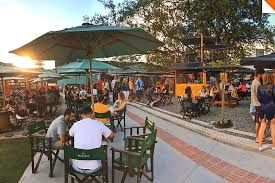

Tamandaré Food Park
O food park mais charmoso de blumenau. Uma praça de alimentação a céu aberto com stadns e containers estilizados que servem uma gastronomia variada. Vale a pena dar uma conferida quando estiver na cidade!
Veja no mapa com chegar.